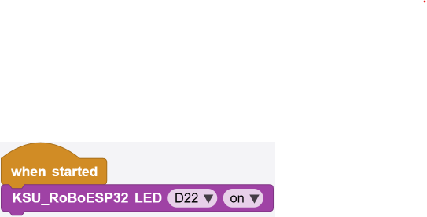
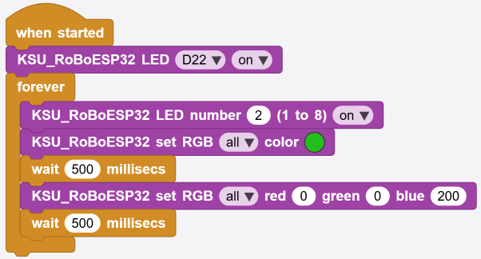
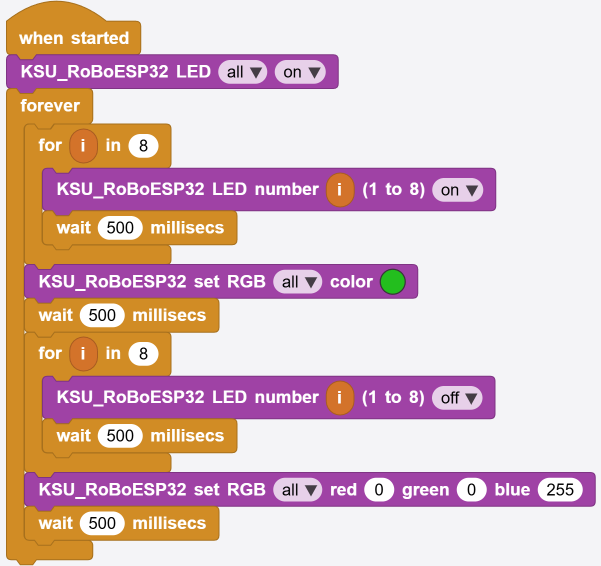
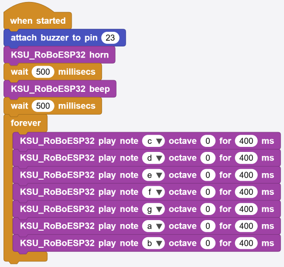
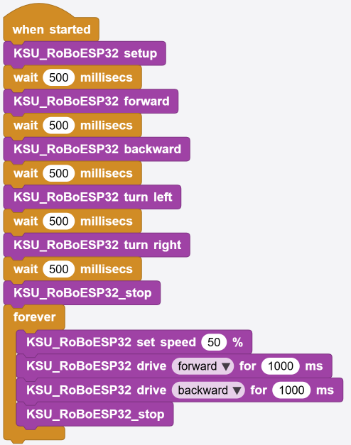
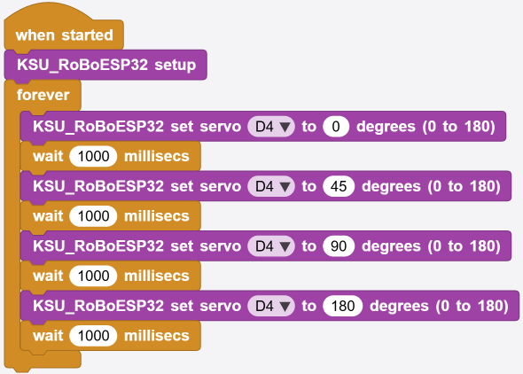
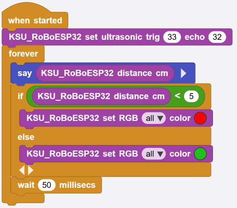
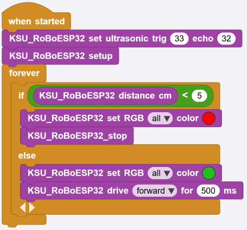
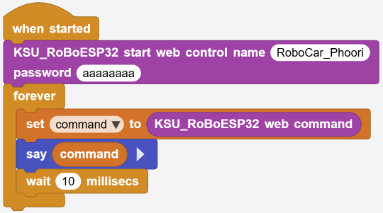
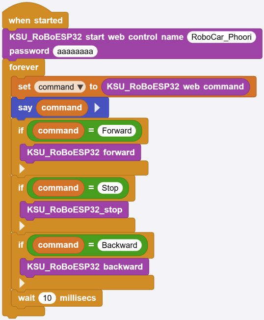

ด่าน 0เตรียมพร้อม
เป้าหมาย: มีของครบและลงโปรแกรมเสร็จ ยังไม่ต้องต่อบอร์ด
ของที่ต้องมี
| สิ่งของ | รายละเอียด |
|---|---|
| บอร์ด Cytron ROBO ESP32 | พร้อมมอเตอร์สองตัวประกอบเป็นรถแล้ว |
| สาย USB | ต้องเป็นสายที่ส่งข้อมูลได้ สายชาร์จไฟอย่างเดียวใช้ไม่ได้ — เป็นปัญหาที่เจอบ่อยที่สุด |
| แบตเตอรี่ | ใส่ตอนจะให้รถวิ่งจริง ระหว่างเขียนโปรแกรมใช้ไฟจาก USB ได้ |
| โทรศัพท์มือถือ | ใช้ในด่าน 7 เครื่องไหนก็ได้ที่ต่อ WiFi และเปิดเบราว์เซอร์ได้ |
| เซอร์โว · เซนเซอร์ HC-SR04 | ไม่บังคับ — ไม่มีก็ข้ามด่าน 5 กับ 6 ไปได้ |
ลงสามอย่างนี้ก่อน
- ไดรเวอร์ CP210x — ตัวแปลง USB บนบอร์ดต้องมีไดรเวอร์ ไม่งั้นคอมพิวเตอร์มองไม่เห็นบอร์ดเลย
แตกไฟล์
CP210x_Windows_Drivers.zipติดตั้ง แล้วรีสตาร์ตเครื่องหนึ่งครั้ง (ทำครั้งเดียวต่อเครื่อง) - โปรแกรม MicroBlocks — โหลดจาก microblocks.fun มีทั้ง Windows, macOS, Linux, Chromebook และแบบเปิดผ่านเบราว์เซอร์
- ไฟล์ไลบรารี
KSU_RoBoESP32.ubl— เก็บไว้ในเครื่อง จะได้ใช้ในด่านถัดไป
ยังไม่ต้องโหลดRoboCar.ubpตอนนี้ ไฟล์นั้นคือเฉลยที่รวมทุกอย่างไว้แล้ว เก็บไว้เปิดตอนจบคอร์สในด่าน 8
✅ ผ่านด่านนี้เมื่อ: เปิด MicroBlocks ขึ้นมาได้ และมีไฟล์ KSU_RoBoESP32.ubl อยู่ในเครื่อง
ด่าน 1ต่อบอร์ดและเพิ่มไลบรารี
เป้าหมาย: มีบล็อก KSU โผล่มาในแถบเครื่องมือ และคลิกแล้วบอร์ดตอบสนอง
- เสียบสาย USB จากบอร์ดเข้าคอมพิวเตอร์ แล้วเปิดสวิตช์บอร์ด
- เปิด MicroBlocks ขึ้นมาเป็นโปรเจกต์เปล่า ยังไม่ต้องเปิดไฟล์อะไร
- กดปุ่มรูปสาย USB ที่แถบเครื่องมือ แล้วเลือกพอร์ตของบอร์ด (บน Windows มักขึ้นเป็น
COMตามด้วยตัวเลข) เมื่อต่อติดจะมีสัญลักษณ์บอกสถานะเปลี่ยนไป - เพิ่มไลบรารี — ที่แถบบล็อกด้านซ้าย กด + Add Library แล้วเลือกไฟล์
KSU_RoBoESP32.ublจะได้หมวดบล็อกใหม่โผล่ขึ้นมาทั้งชุด
ชื่อบล็อกที่เห็นจะยาวกว่าที่เขียนในคู่มือนี้ — บนบอร์ดบล็อกจะชื่อ
KSU_RoBoESP32 forward แต่คู่มือนี้เขียนย่อว่า KSU forward
เพื่อให้อ่านง่าย เป็นบล็อกตัวเดียวกัน ชื่อเต็มขึ้นต้นด้วย
KSU_RoBoESP32 เสมอ ทั้งตอนเพิ่มไลบรารีเองในด่านนี้ และตอนเปิดไฟล์
RoboCar.ubp ในด่าน 8
ทดสอบว่าบอร์ดตอบสนองจริง
ลากบล็อก KSU LED D22 on มาต่อใต้ when started ตามภาพ แล้วกดปุ่มเริ่ม ▶ — ไฟต้องติดทันที

ภาพนี้เรียกไฟด้วยชื่อขา (
D22) จะใช้
KSU LED number 3 เรียกเป็นหมายเลขดวงแทนก็ได้ ผลเหมือนกันหรือจะไม่ใช้ when started เลยก็ได้ — ลากมาแค่บล็อกไฟบล็อกเดียว แล้วคลิกที่ตัวบล็อกโดยตรง ไฟก็ติดเหมือนกัน
นี่คือท่าไม้ตายของ MicroBlocks: คลิกบล็อกไหน บล็อกนั้นทำงานทันที ไม่ต้องกดรันทั้งโปรแกรมและไม่ต้องรอคอมไพล์ ใช้ลองของทีละชิ้นได้เร็วมาก — ทั้งคอร์สนี้จะใช้วิธีนี้ตลอด
ถ้าหาพอร์ตไม่เจอ: ยังไม่ได้ลงไดรเวอร์ CP210x · ยังไม่ได้รีสตาร์ตหลังลงไดรเวอร์ · หรือใช้สาย USB แบบชาร์จไฟอย่างเดียว ลองเปลี่ยนสายเป็นอันดับแรก
✅ ผ่านด่านนี้เมื่อ: คลิกบล็อกแล้วไฟบนบอร์ดติดได้
ด่าน 2ไฟ LED และ RGB
เป้าหมาย: สั่งไฟทุกดวงบนบอร์ดได้ และเขียนไฟวิ่งเป็นลูปแรกของคอร์ส
ไฟบนบอร์ดมีสองชุด
| ชุด | คำอธิบาย | บล็อกที่ใช้ |
|---|---|---|
| LED เดี่ยว 8 ดวง | ไฟดวงเล็กเรียงกัน สั่งได้แค่ติด/ดับ | KSU LED number |
| ไฟ RGB 2 ดวง | ไฟหน้ารถ เปลี่ยนสีได้อิสระ ผสมสีเองได้ | KSU set RGB |
ลองทีละบล็อก
คลิกทีละบล็อกดูว่าอะไรเกิดขึ้น — KSU LED number 1 on · KSU LED all off · KSU light on · KSU set RGB all red 255 green 0 blue 0 · KSU change RGB brightness by -25 %
KSU light on คือทางลัดของไฟหน้าสีขาวนวล
ส่วน KSU set RGB ผสมสีเองได้ทั้งสามค่า ค่าละ 0 ถึง 255
ช่องแรกเลือกได้ว่าจะสั่งดวง 0, ดวง 1 หรือ all ทั้งสองดวง
ลูปแรก: ไฟกับสีสลับกันไปเรื่อย ๆ
ประกอบตามภาพนี้ เปิดไฟดวงหนึ่งค้างไว้ แล้ววนสลับสีไฟหน้าเขียว-น้ำเงินทุกครึ่งวินาที

สังเกตว่าสั่งสีได้สองแบบ — คลิกเลือกสีจากวงกลม กับใส่เลขเอง red/green/blue
ลองเปลี่ยนเลข 500 เป็น 2000 แล้วเป็น 100 ดู จะเห็นชัดว่าเลขนี้คุมจังหวะการสลับสี
ขั้นต่อไป: ไฟวิ่ง 8 ดวง
ทีนี้เพิ่ม for i in 8 เข้าไป จะได้ไฟไล่กันทีละดวงแทนที่จะติดพร้อมกัน

ทั้งหมดอยู่ใน forever จึงวนซ้ำไม่มีหยุด
อ่านออกเสียงได้ว่า "ให้ i ไล่จาก 1 ถึง 8 แล้วแต่ละครั้งเปิดไฟดวงที่ i รอครึ่งวินาที"
— ตัวแปร i
คือกล่องที่เปลี่ยนค่าไปเรื่อย ๆ ทุกรอบ ทำให้บล็อกเดียวสั่งได้ทั้งแปดดวงโดยไม่ต้องเขียนแปดครั้ง
✅ ผ่านด่านนี้เมื่อ: ทำไฟวิ่งได้ และเปลี่ยนสีไฟหน้าเป็นสีที่ตัวเองชอบได้
ด่าน 3เสียงและดนตรี
เป้าหมาย: ทำให้บอร์ดส่งเสียงได้ตั้งแต่ติ๊ดเดียวจนถึงเล่นเพลง
บนบอร์ดมีลำโพงเล็ก ๆ ติดมาแล้ว ไม่ต้องต่ออะไรเพิ่ม สั่งได้เลย
คลิกทีละบล็อกฟังความต่างก่อน — KSU beep · KSU horn · KSU play tone 440 Hz for 300 ms · KSU play note c octave 0 for 400 ms · KSU play Happy Birthday
| บล็อก | ใช้ตอนไหน |
|---|---|
| KSU beep | เสียงติ๊ดสั้น ๆ เหมาะกับเตือนหรือยืนยันว่าโปรแกรมมาถึงจุดนี้แล้ว |
| KSU horn | เสียงแตรรถ สองโน้ตต่อกัน |
| KSU play tone | กำหนดความถี่เอง ตัวเลขมากเสียงแหลม ตัวเลขน้อยเสียงทุ้ม |
| KSU play note | สั่งเป็นตัวโน้ตดนตรี แต่งเพลงเองได้ |
ต่อกันเป็นทำนอง
เอา KSU play note มาต่อกันหลาย ๆ อัน เปลี่ยนตัวโน้ตในช่องแรกไปเรื่อย ๆ ก็ได้เพลงแล้ว

c d e f g a b ตัวละ 400 msบล็อกสีน้ำเงิน attach buzzer to pin 23 มาจากไลบรารี Tone — ปกติ KSU setup จัดการให้แล้ว ใส่เองซ้ำก็ไม่เสียหาย
ผสมกับด่านที่แล้ว: ลองให้ไฟเปลี่ยนสีพร้อมกับเสียงแต่ละโน้ต จะได้ของเล่นชิ้นแรกที่มีทั้งภาพและเสียง
✅ ผ่านด่านนี้เมื่อ: เล่นโน้ตต่อกันได้เป็นทำนองสั้น ๆ ที่ตัวเองแต่ง
ด่าน 4มอเตอร์และการขับเคลื่อน
เป้าหมาย: ให้รถวิ่งได้ถูกทิศ และวิ่งตามเส้นทางที่วางไว้เอง
ยกรถขึ้นจากพื้นก่อน เอาอะไรหนุนใต้ท้องให้ล้อลอย จะได้ทดสอบโดยที่รถไม่วิ่งตกโต๊ะ และใส่แบตเตอรี่ด้วย เพราะมอเตอร์กินไฟมากกว่าที่สาย USB จ่ายไหว
ลองสั่งทีละทิศ
ประกอบตามภาพข้างล่าง — เริ่มด้วย KSU setup แล้วไล่ KSU forward · KSU backward · KSU turn left · KSU turn right คั่นแต่ละทิศด้วย wait 500 millisecs แล้วปิดท้ายด้วย KSU stop
บล็อกเดินหน้า/ถอยหลังไม่มีการหยุดในตัว มันจะหมุนไปเรื่อย ๆ จนกว่าจะสั่ง KSU stop — นี่คือเหตุผลที่ต้องมี stop ปิดท้ายเสมอ
ต้องคลิก KSU setup ก่อนเสมอ ไม่งั้นรถจะนิ่งสนิท —
กำลังมอเตอร์คิดจาก ความเร็ว × ค่า trim และทั้งสองค่ายังว่างอยู่จนกว่าจะมีบล็อกไปตั้งให้
คูณกันแล้วได้ 0 รถจึงไม่ขยับทั้งที่โปรแกรมดูถูกทุกอย่าง
ใส่ KSU set speed อย่างเดียวยังไม่พอ
เพราะ trim ยังว่าง — KSU setup ตั้งให้ครบทั้งคู่ในทีเดียว

ท่อนล่างใน forever ใช้ KSU drive ที่หยุดเอง วิ่งหน้า-ถอยหลังสลับกันไปเรื่อย ๆ
ในภาพบล็อกหยุดยังเขียนว่า
KSU_RoBoESP32_stop
ตอนนี้เปลี่ยนเป็น KSU_RoBoESP32 stop แล้ว เป็นบล็อกเดียวกันรถวิ่งผิดทาง? แก้ตรงนี้
มอเตอร์แต่ละคันประกอบมาไม่เหมือนกัน ถ้าทิศไม่ตรงให้คลิก
KSU set motor trim M1 -1 M2 -1
ด้วยค่าตามตาราง (ค่าที่ KSU setup ตั้งให้คือ -1 -1)
| อาการ | ใส่ค่า |
|---|---|
| สั่งเดินหน้าแล้วถอยหลัง และเลี้ยวสลับข้าง | 1 และ 1 |
| สั่งเดินหน้าแล้วหมุนอยู่กับที่ | สลับตัวเดียว เช่น 1 กับ -1 |
| เลี้ยวซ้ายกลายเป็นเลี้ยวขวา | สลับทั้งสองตัว |
ค่านี้จำไว้จนกว่าจะปิดเครื่อง เจอค่าที่ถูกแล้วให้จดไว้ เดี๋ยวด่าน 7 จะเอาไปใส่ในโปรแกรมจริง
วิ่งตามเส้นทางที่วางไว้
ท่อน forever ในภาพข้างบนใช้บล็อก KSU drive ซึ่งต่างจากบล็อกทิศธรรมดา ตรงที่มันวิ่งตามเวลาที่กำหนดแล้วหยุดเอง จึงเอามาต่อกันเป็นเส้นทางได้โดยไม่ต้องคอยสั่ง stop
ลองต่อยอด: เปลี่ยนท่อนนั้นเป็น repeat 4
ที่มี KSU drive forward for 1000 ms และ
KSU drive right for 500 ms อยู่ข้างใน
รถจะวิ่งเป็นรูปสี่เหลี่ยม
เลข 500 คือเวลาที่ใช้เลี้ยวให้ครบ 90 องศา พื้นแต่ละแบบไม่เท่ากัน ต้องลองปรับเอง
✅ ผ่านด่านนี้เมื่อ: รถวิ่งถูกทิศทุกทิศ และวิ่งกลับมาใกล้จุดเดิมได้หลังวิ่งครบสี่เหลี่ยม
ด่าน 5เซอร์โวและแขนกล
เป้าหมาย: สั่งให้แขนหมุนไปหยุดที่มุมที่ต้องการได้ · ต้องมีเซอร์โวอย่างน้อยหนึ่งตัว
เซอร์โวต่างจากมอเตอร์ยังไง
มอเตอร์ในด่านที่แล้วสั่งได้แค่ "หมุนแรงเท่าไร ทางไหน" มันหมุนวนไปเรื่อย ๆ โดยไม่รู้ว่าตัวเองอยู่ตรงไหน ส่วนเซอร์โวสั่งเป็นมุมได้เลยว่าให้ไปหยุดที่กี่องศา แล้วมันจะไปที่มุมนั้นและค้างอยู่อย่างนั้น จึงเหมาะกับแขนกล ก้ามคีบของ หรือหัวส่ายไปมา
| มุมที่สั่ง | ผลลัพธ์ |
|---|---|
0 | หมุนสุดไปทางหนึ่ง |
90 | อยู่ตรงกลาง |
180 | หมุนสุดไปอีกทางหนึ่ง |
เสียบตรงไหน
บอร์ดมีช่องเสียบเซอร์โว 4 ช่อง คือ D4 D5 D18 D19
ใช้พร้อมกันได้ทั้งสี่ ถ้ามีตัวเดียวให้เสียบ D4 เพราะเป็นช่องที่บล็อกทางลัดและแถบเลื่อนหลักในด่าน 7 สั่งงาน
ระวังเสียบกลับด้าน — สายเซอร์โวมีสามเส้น ให้เทียบกับที่พิมพ์ไว้บนบอร์ด โดยทั่วไปสีน้ำตาลหรือดำคือ GND · สีแดงคือไฟ · สีส้มหรือเหลืองคือสายสัญญาณ เสียบสลับขั้วอาจทำให้เซอร์โวเสีย
ใส่แบตเตอรี่ เซอร์โวกินไฟมากโดยเฉพาะตอนยกของหรือถูกฝืน ถ้าใช้ไฟจาก USB อย่างเดียวแล้วบอร์ดรีเซ็ตเอง ให้ใส่แบตแล้วลองใหม่
ทดสอบ
คลิก KSU set servo D4 to 90 degrees
แล้วเปลี่ยนเลขเป็น 0 / 90 / 180 สลับกันดู
KSU set arm angle 90 degrees ทำงานเหมือนกันเป๊ะเมื่อใช้ช่อง D4
เป็นทางลัดที่พิมพ์สั้นกว่า
ทำไมเป็น 0 ถึง 180? บล็อกดั้งเดิมของ Cytron ใช้ −90 ถึง 90 ซึ่งมีเลขติดลบให้สับสน ไลบรารีนี้แปลงให้เหลือ 0–180 ที่จุดเดียว ทุกบล็อกและทุกแถบเลื่อนจึงใช้ 0–180 เหมือนกันหมด
ให้แขนกวาดไปมา
ประกอบตามภาพ — KSU setup แล้ววน forever ไล่มุมทีละขั้น คั่นด้วย wait ทุกครั้ง

0 → 45 → 90 → 180 วนไปเรื่อย ๆ คั่นด้วย
wait 1000 millisecs ทุกช่วงเวลารอ 1 วินาทีเผื่อไว้เยอะ จะได้เห็นชัดว่าแขนหยุดนิ่งที่แต่ละมุมจริง ๆ ก่อนไปมุมถัดไป — พอคล่องแล้วลองลดเหลือ
400 ดูทำไมต้องมี wait คั่น? การสั่งมุมใช้เวลาเสี้ยววินาที แต่แขนต้องใช้เวลาเดินทางจริง ถ้าสั่งมุมใหม่ทันทีโดยไม่รอ แขนจะยังไปไม่ถึงมุมเดิมแล้วถูกสั่งให้กลับ ผลคือมันสั่นอยู่กับที่แทนที่จะกวาด
อย่าฝืนเซอร์โว ถ้าได้ยินเสียงครืดคราดค้างอยู่ แปลว่าแขนไปชนอะไรหรือถูกสั่งเกินมุมที่กลไกไปได้ ให้รีบสั่งกลับมาที่ 90 องศา ปล่อยค้างไว้นาน ๆ เฟืองข้างในหักได้
✅ ผ่านด่านนี้เมื่อ: แขนกวาดไปมาได้โดยไม่สั่น และกลับมาหยุดที่ 90 องศาได้
ด่าน 6เซนเซอร์และเงื่อนไข
เป้าหมาย: ให้รถตัดสินใจเองได้ · ต้องมีเซนเซอร์ HC-SR04
ต่อสายแบบนี้
| ขาเซนเซอร์ | ต่อเข้ากับ |
|---|---|
| VCC | 5V |
| GND | GND |
| Trig | ขา 33 |
| Echo | ขา 32 |
คลิก KSU set ultrasonic trig 33 echo 32 หนึ่งครั้งเพื่อบอกไลบรารีว่าเสียบขาไหน จากนั้นคลิก KSU distance cm จะมีป้ายบอกระยะเป็นเซนติเมตรโผล่ขึ้นมา ลองเอามือบังหน้าเซนเซอร์แล้วคลิกใหม่
ขา 33 กับ 32 คือ LED ดวงที่ 8 และ 7 ไฟสองดวงนี้จะกะพริบตามจังหวะยิงคลื่นซึ่งไม่เป็นไร แต่อย่าสั่งเปิด LED 7 หรือ 8 ขณะเสียบเซนเซอร์ เพราะจะแย่งกันคุมสายเส้นเดียวกัน
ตัวแปรกับเงื่อนไข — สองอย่างที่ทำให้รถมีสมอง
ตัวแปรคือกล่องใส่ของที่มีชื่อ เราเก็บค่าที่วัดได้ใส่กล่องไว้ก่อน แล้วเงื่อนไข (if)
คือการเปิดกล่องมาดูแล้วตัดสินใจว่าจะทำอะไรต่อ
รูปแบบที่ต้องการคือ เก็บระยะใส่ตัวแปรชื่อ cm ก่อนหนึ่งครั้ง แล้วค่อยเอา cm ไปเทียบใน if — ถ้า cm มากกว่า 0 และน้อยกว่า 20 ให้หยุดแล้วส่งเสียง
ทำไมต้องเช็ก cm > 0 ด้วย? เพราะเลข 0 แปลว่า "ไม่มีเสียงสะท้อนกลับมา"
ซึ่งเกิดตอนที่ข้างหน้าโล่งไม่มีอะไรเลย ถ้าไม่ใส่เงื่อนไขนี้ รถจะหยุดตอนทางโล่ง
แต่กลับวิ่งชนตอนมีสิ่งกีดขวาง — ตรงข้ามกับที่ต้องการทุกประการ
อ่านค่าครั้งเดียวแล้วเก็บใส่ตัวแปร อย่าเรียกบล็อกวัดระยะซ้ำ ๆ ในรอบเดียว เพราะการยิงคลื่นแต่ละครั้งหน่วงโปรแกรมได้ถึง 25 มิลลิวินาที ยิ่งเรียกซ้ำยิ่งช้า
รวมกับด่าน 4: รถวิ่งเองแล้วหยุดเองได้
เอา if ข้างบนใส่ใน forever แล้วเติม else ให้วิ่งต่อเมื่อทางโล่ง — สองภาพนี้คือขั้นตอนที่ห้องเรียนทำจริง

ภาพนี้เรียกบล็อกวัดระยะ 2 ครั้งในรอบเดียว — ทำงานได้แต่ช้ากว่าที่ควร ลองแก้เป็นเก็บใส่ตัวแปรครั้งเดียวดู

✅ ผ่านด่านนี้เมื่อ: รถวิ่งเองแล้วหยุดพร้อมส่งเสียงเมื่อเอามือไปบังหน้า
ด่าน 7เปิด WiFi แล้วคุมจากเบราว์เซอร์
เป้าหมาย: บอร์ดปล่อย WiFi ของตัวเอง แล้วบังคับรถจากมือถือได้
ถึงตรงนี้ทุกส่วนของรถทำงานได้หมดแล้ว เหลืออย่างเดียวคือวิธีสั่งจากระยะไกล ไลบรารีมีเว็บเซิร์ฟเวอร์ในตัว ใช้แค่สามบล็อกก็ได้หน้าจอควบคุมเต็มรูปแบบ ไม่ต้องเขียน HTML เลยสักบรรทัด
สคริปต์ทั้งหมดที่ต้องใช้

RoboCar.ubp ยังใช้ชื่อบล็อกแบบสั้น
ตอนนี้ชื่อจริงบนบอร์ดขึ้นต้นด้วย KSU_RoBoESP32 ทุกตัว แต่การต่อบล็อกเหมือนในภาพทุกอย่าง| บล็อก | หน้าที่ |
|---|---|
| when started | เริ่มทำงานเมื่อกดปุ่มเริ่ม หรือเมื่อบอร์ดเปิดเครื่องใหม่ |
| KSU start web control | เปิด WiFi ชื่อ RoboCar พร้อมเว็บเซิร์ฟเวอร์ ตั้งความเร็วเริ่มต้น 70% หมุนเซอร์โวทุกตัวไป 90° และตั้งขาเซนเซอร์ให้เสร็จ |
| forever | วนถามซ้ำ ๆ ว่ามีคำสั่งเข้ามาหรือยัง |
| command = KSU web command | รับคำสั่งที่กดมาจากหน้าเว็บ ได้มาเป็นคำเดียว เช่น Forward |
| KSU do command | เอาคำนั้นไปทำให้จริง ครบทุกปุ่มที่หน้าเว็บมี |
| wait 10 millisecs | พักสั้น ๆ ให้บอร์ดได้ทำงานอื่น |
ทำไมต้องมี forever? เพราะบอร์ดไม่รู้ว่าเราจะกดปุ่มเมื่อไร มันจึงต้องถามซ้ำ ๆ ตลอดเวลา วินาทีละหลายสิบครั้ง ถ้าถามครั้งเดียวแล้วจบ กดปุ่มทีหลังจะไม่มีอะไรเกิดขึ้น
เจอค่า trim ที่ถูกในด่าน 4 แล้วใช่ไหม เอาบล็อก KSU set motor trim มาวางต่อใต้ KSU start web control รถจะได้ถูกทิศทุกครั้งที่เปิดเครื่อง
เปิดเบราว์เซอร์ควบคุม
- กดปุ่มเริ่มทำงาน ▶ ที่แถบเครื่องมือ — โปรแกรมถูกเก็บลงบอร์ดแล้ว ถอดสาย USB ใส่แบตเตอรี่ได้เลย
- ต่อ WiFi — ที่โทรศัพท์เลือกเครือข่ายชื่อ
RoboCarใส่รหัสผ่านrobocar123 - เปิดเบราว์เซอร์ พิมพ์
http://192.168.4.1ให้ครบทั้งบรรทัด อย่าให้เบราว์เซอร์เอาไปค้นใน Google - หมุนโทรศัพท์เป็นแนวนอน — หน้าเว็บออกแบบมาสำหรับแนวนอนเท่านั้น ถ้าถือแนวตั้งจะขึ้นข้อความให้หมุนเครื่อง
รหัสผ่านต้องยาวอย่างน้อย 8 ตัวอักษร ถ้าตั้งสั้นกว่านั้นบอร์ดจะเปิดฮอตสปอตไม่สำเร็จ และจะหาชื่อ WiFi ไม่เจอเลย

บนคอมพิวเตอร์ใช้ปุ่มลูกศรหรือ W A S D บังคับได้ด้วย

คือของจากด่าน 2 ทั้งหมด

สังเกตไหมว่าไม่มีอะไรใหม่เลย ทุกปุ่มบนหน้าเว็บคือบล็อกที่เราเล่นมาแล้วทั้งนั้น ด่านนี้แค่เพิ่มช่องทางสั่งจากระยะไกลเข้าไป
อยากเห็นว่าหน้าเว็บส่งอะไรมาจริง ๆ
ก่อนจะให้รถทำตามคำสั่ง ลองแค่อ่านคำที่ส่งมาดูก่อน วิธีนี้ทำให้เห็นกับตาว่าการกดปุ่มบนมือถือ คือการส่งคำหนึ่งคำมาที่บอร์ด ไม่มีอะไรลึกลับ

กดปุ่มบนมือถือแล้วดูป้ายข้อความในหน้าต่าง MicroBlocks จะเห็นคำว่า
Forward, Speed โผล่มาทีละคำ
ต้องเสียบสาย USB ค้างไว้ถึงจะเห็นป้าย say — ถอดสายไปวิ่งจริงจะไม่มีอะไรแสดง

Forward Stop Backwardนี่คือวิธีที่ทำให้เข้าใจว่า KSU do command ทำอะไรอยู่ข้างใน — เดี๋ยวด่าน 8 จะเห็นครบทั้งสิบคำ
✅ ผ่านด่านนี้เมื่อ: ขับรถจากมือถือได้ครบสี่ทิศ เปิดปิดไฟได้ และบีบแตรได้
ด่าน 8ประกอบร่าง — RoboCar.ubp
เป้าหมาย: เปิดไฟล์ฉบับเต็ม อ่านให้เข้าใจทั้งหมด แล้วต่อยอดเป็นของตัวเอง
ตอนนี้คุณต่อทุกชิ้นมาด้วยมือตัวเองแล้ว ถึงเวลาเปิด RoboCar.ubp
ซึ่งคือทุกอย่างที่ผ่านมาประกอบไว้ให้เรียบร้อยในไฟล์เดียว พร้อมสคริปต์ตัวอย่างและโน้ตอธิบายวางไว้รอบ ๆ
ข้างในมีอะไรบ้าง
| สิ่งที่เห็น | คืออะไร |
|---|---|
| สคริปต์หลัก | สามบล็อกจากด่าน 7 ที่ต่อกับ when started เรียบร้อยแล้ว |
ชุด if สิบอันวางแยกไว้ | ไม่ได้ต่อกับอะไร ไม่มีอะไรรันมัน วางไว้ให้ดูว่าบล็อกอัตโนมัติทำอะไรอยู่ข้างใน |
| บล็อกเดโม่คลิกได้ | คลิกทีละอันเพื่อลองของแต่ละชิ้น เหมือนที่ทำมาตลอดคอร์ส |
| โน้ตสีเหลือง | คำอธิบายเรื่องเซนเซอร์และการปรับ trim ติดไว้ข้างสคริปต์ |
ชื่อบล็อกเหมือนกับตอนเพิ่มไลบรารีเองทุกตัว — ในไฟล์นี้บล็อกก็ชื่อ KSU_RoBoESP32 forward เหมือนที่เห็นมาตั้งแต่ด่าน 1 ไม่ต้องจำชื่อใหม่ (คู่มือยังเขียนย่อว่า KSU forward เพื่อให้อ่านง่ายเหมือนเดิม)
บล็อกอัตโนมัติไม่ใช่เวทมนตร์
ลองถอด KSU do command ออกจากลูป แล้วเอาชุด if ที่วางไว้ข้าง ๆ ใส่แทน
ผลลัพธ์จะเหมือนเดิมทุกอย่าง — นี่คือสิ่งที่บล็อกเดียวนั้นทำอยู่ข้างใน
set command to (KSU web command)
if (command) = 'Forward' → KSU forward
if (command) = 'Backward' → KSU backward
if (command) = 'Left' → KSU turn left
if (command) = 'Right' → KSU turn right
if (command) = 'Stop' → KSU stop
if (command) = 'Light1' → KSU light (on)
if (command) = 'Horn' → KSU horn
if (command) = 'Speed' → KSU set speed (KSU command value) %ตัวพิมพ์ใหญ่-เล็กสำคัญมาก Forward ใช้ได้ แต่ forward และ FORWARD ใช้ไม่ได้
คอมพิวเตอร์ถือว่าเป็นคนละคำกัน
ตัวเลขที่ส่งมากับคำสั่ง
ปุ่มธรรมดาส่งมาแค่คำเดียว แต่แถบเลื่อนต้องส่งตัวเลขมาด้วย โดยต่อท้ายด้วย _
| หน้าเว็บส่ง | คำที่ได้ | ตัวเลขที่ได้ |
|---|---|---|
/Forward | Forward | ไม่มี |
/Speed_70 | Speed | 70 |
/Servo_120 | Servo | 120 |
/Rgb_2_255_120_0 | Rgb | 2, 255, 120, 0 |
อ่านออกมาด้วย KSU command value — ถ้าคำสั่งล่าสุดไม่มีตัวเลขมาด้วย บล็อกนี้จะรายงานเลข 90 ไม่ใช่ 0 และต้องอ่านในรอบเดียวกันกับที่คำสั่งเข้ามา
🏆 ด่านสุดท้าย: สร้างคำสั่งของตัวเอง
วิธีที่ง่ายที่สุดคือยึดปุ่มที่มีอยู่แล้วมาใช้ใหม่ เช่นจับปุ่มแตรให้ทำท่าเต้นแทน (ต้องถอด KSU do command ออกก่อน ไม่งั้นมันจะบีบแตรแข่งกับเรา)
ท่าเต้นเมื่อกดปุ่มแตร — ใส่ if command = Horn แล้วข้างในวาง repeat 3 ที่สลับ KSU turn left กับ KSU turn right คั่นด้วย KSU set RGB เปลี่ยนสีแดง-น้ำเงิน และ wait 200 millisecs ทุกจังหวะ ปิดท้ายนอกลูปด้วย KSU stop
ส่วนการเพิ่มปุ่มใหม่จริง ๆบนหน้าเว็บนั้นต้องแก้ 3 จุดพร้อมกัน ขาดจุดใดจุดหนึ่งคำสั่งจะเงียบหายไปเฉย ๆ รายละเอียดทั้งหมดอยู่ในคู่มือไลบรารี
1 · หน้าเว็บต้องส่งคำนั้น
เพิ่มปุ่มใน RoboCar-Control.html โดยเรียกผ่านฟังก์ชัน s() เท่านั้น
2 · ไลบรารีต้องรู้จักคำนั้น
เพิ่มเงื่อนไขในบล็อกลับ _do2 ไม่ใช่ใน KSU do command
3 · ถ้าต้องมีบล็อกใหม่
เพิ่มบรรทัด spec ในไลบรารี บล็อกจึงจะโผล่ในแถบเครื่องมือ
🏆 จบคอร์สเมื่อ: กดปุ่มบนมือถือแล้วรถทำท่าที่คุณออกแบบเองได้
ไปต่อที่ไหน
📘 คู่มือไลบรารี 13 บท
รายการบล็อกครบทุกตัวแยกตามหมวด ตารางคำสั่งครบ 21 คำ ตารางขา GPIO ทั้งบอร์ด วิธีเพิ่มคำสั่งใหม่ ตารางแก้ปัญหา และใบงานอีก 6 ชิ้น
🔧 โจทย์ท้าทาย
- ใช้ปุ่ม D34/D35 บนบอร์ดสั่งงานโดยไม่ต้องใช้มือถือ
- ทำโหมดหลบสิ่งกีดขวางอัตโนมัติเต็มรูปแบบ
- ต่อเซอร์โวสองตัวเป็นก้ามคีบแล้วแข่งเก็บของ
- ทำไฟเลี้ยวที่กะพริบตามทิศที่กำลังวิ่ง
- วัดระยะแล้วให้เสียงถี่ขึ้นเมื่อเข้าใกล้ เหมือนเซนเซอร์ถอยหลังในรถยนต์
ดาวน์โหลดไฟล์
ไลบรารีใช้ตั้งแต่ด่าน 1 · ไฟล์โปรเจกต์เต็มใช้ตอนด่าน 8